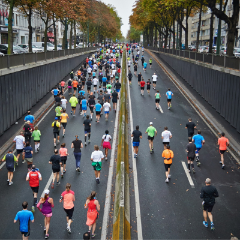
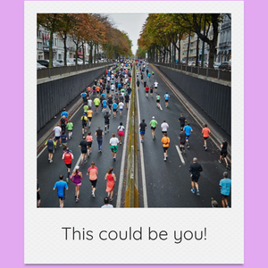
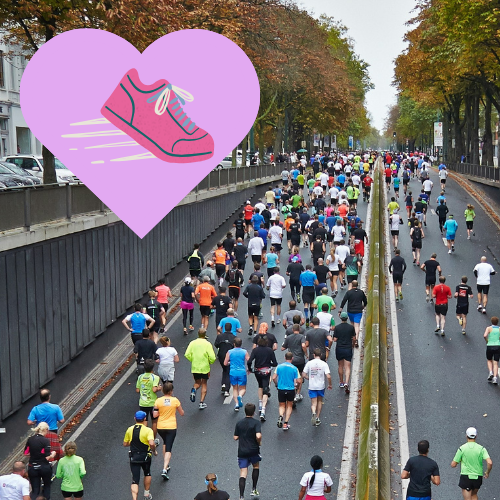

There are so many reasons why you might be interested in training for a marathon. You might be seeing everyone you know posting pictures with their medals on social media. Maybe you've joined your local run club and have caught the long distance running bug from the other members of the run club. If you have already run long-distance races before, like a half marathon, maybe this is just the next logical step for you in your running journey. Whatever your reason may be, marathon training is a wonderful challenge that can help you learn more about yourself and help make you a more resilient person overall. If you are someone who struggles to set a long-term goal for yourself and stick to your plans for working toward that goal, successfully crossing the finish line of a marathon could be an incredibly meaningful experience for you. Marathon training means staying committed to yourself and your goals over the course of months, or maybe even a year or two. You can finish marathon training a new and improved version of yourself -- mentally, emotionally, and physically.
First, you might want to check in with a doctor to ensure no physical health factors would prevent you from successfully completing a marathon training block. If you have already been working with a physical therapist to recover from any injuries, you might want to discuss your potential marathon goal with them as well. There are many other exciting running (or other excercise) goals you could work toward if your body isn't in the right state to respond well to marathon training at the moment. You might also want to consider opting for a different goal if you cannot commit to running at least four days a week during the four or five months leading up to race day. Training also involves scheduling time for strength training (very important for injury prevention) two to four times per week, depending on how much time you want to devote to each strength session. If you haven't already established a routine of regularly running at least a few days a week and you're interested in a marathon only a few months away, maybe you can sign up to run a shorter race this year and sign up for the same race a year in the future. You could spend the next year working on your aerobic base and be really prepared the next time the race comes around. Because nutrition, sleep, stress levels, and so many other factors can play into whether you're in the right physical state to take on marathon training, it's very important to think about what else you have going on in your life during the period of time you want to be training. Will marathon training be a fun addition to your life that you can truly balance with your other responsibilities? Or is it perhaps kinder to yourself to set a different goal during this particular phase in your life? Being honest with yourself about your current capacity to train is incredibly important, because you want training for a race to be an overall enjoyable experience instead of a burden!

Have you picked and signed up for a race that's far enough away to truly have enough time to safely ramp up your training? Amazing! It might be time to find a human coach to work with or a running app to sign up for that can schedule your runs for you. Work backward from your race day and think about how long you have to train. If you have more than 16-20 weeks (the traditional marathon training block) until race day, you could start building your aerobic base on your own without using an app or a coach. Consider where you are with your current running habits. Increase your current runs by a maximum of ten percent each week (distance or duration). If you are not already running, try scheduling in a few walks every week and just incorporating a little more movement into your everyday life. After a couple of weeks of consistent walks, try transitioning to run/walk intervals to slowly build up your endurance.
| Location | Marathon | Elevation Gain | Typical Date |
|---|---|---|---|
| United States | Houston Marathon | About 60m | Second Sunday of January |
| Australia | Gold Coast Marathon | About 8m | First Sunday of July |
| Europe | Rotterdam Marathon | Minimal | Mid-April |
| Europe | Amsterdam Marathon | Minimal | Third Sunday of October |
| Europe | Valencia Marathon | Less than 30m | First Sunday of December |
| Source: Runna | |||
The short answer is that, unless you are an elite athlete, you should absolutely not worry about your pace. Maybe you've heard the saying, "it's a marathon, not a sprint?" That's because in long-distance races, a crucial aspect of your strategy is maintaining your pace for a longer period of time than you've spent on your feet in your entire life. During most of your training runs, you probably want to focus on keeping most of your runs easy. An easy effort level would mean that you could easily have a full conversation while running. According to Hal Higdon's website (which also offers various free marathon training plans), you want to focus on covering the prescribed distance for your long runs, instead of shooting for a pace. Not having your mind on a particular pace during your training runs is especially important if you do not already know what your expected marathon pace is because you haven't completed a marathon yet! Putting a lot of time in running before your race is more important than hitting specific paces on your training runs, so keep your mind on your effort and consult your coach or training plan to assess when it's appropriate to add speed work into your training.

fitness tracker data overload
lots of sun protection!
sleeping more than you ever have
getting into strength training to support your running
finding your favorite running shoes (and socks!)
endless brightly colored running outfits
Make sure you have running shoes that can really support your training. Though they can be expensive, they are an important investment in your running success and injury prevention. If you give yourself enough time to purchase them, you can even wait for a sale at your local running shoe store! You also want to make sure you have enough running clothes that are conducive to successful runs, whatever that looks like for you. They don't need to be the trendiest clothes ever. However, you want them to work well for runs that can last up to a few hours! You also want to think about a handheld water bottle, hydration vest, or other hydration gear. It's always safest to have hydration with you on a run, but it's especially important when your long runs start getting longer and longer. Safety should always come first, even if it's uncomfortable at first to carry your water! There are so many ways to bring water on your runs that at least one should work for you.
Rest is incredibly important, and you want to make sure to get at least 8 hours of sleep every night as often as you can. Your recovery is key to your success in marathon training. Part of taking recovery seriously is actually resting on your rest days instead of thinking you need to be active every day of the week. Nutrition is also key to your safety and success while marathon training. Anyone training for a marathon will have different nutritional needs than someone who isn't training for a marathon. Even if you have generally been active, you need to think differently about how to fuel before, during, and after your runs and other workouts. You also need to think about your electrolyte intake needs, especially for runs longer than 45 minutes. Here are some other topics you want to think about before you start training: